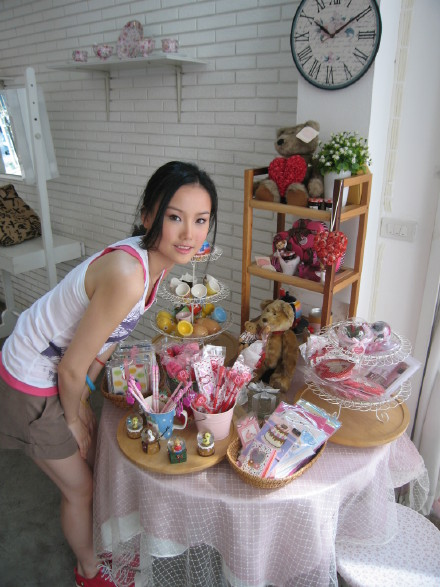
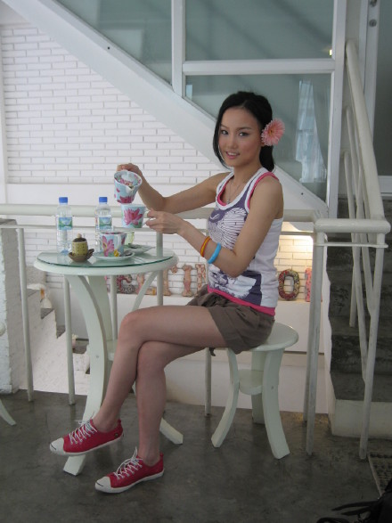
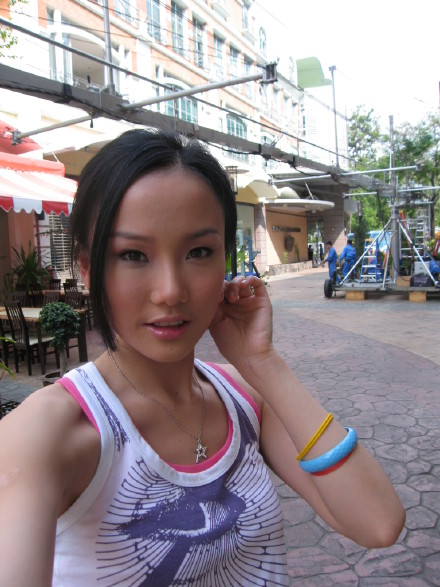
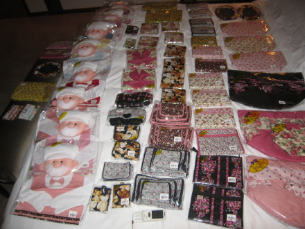
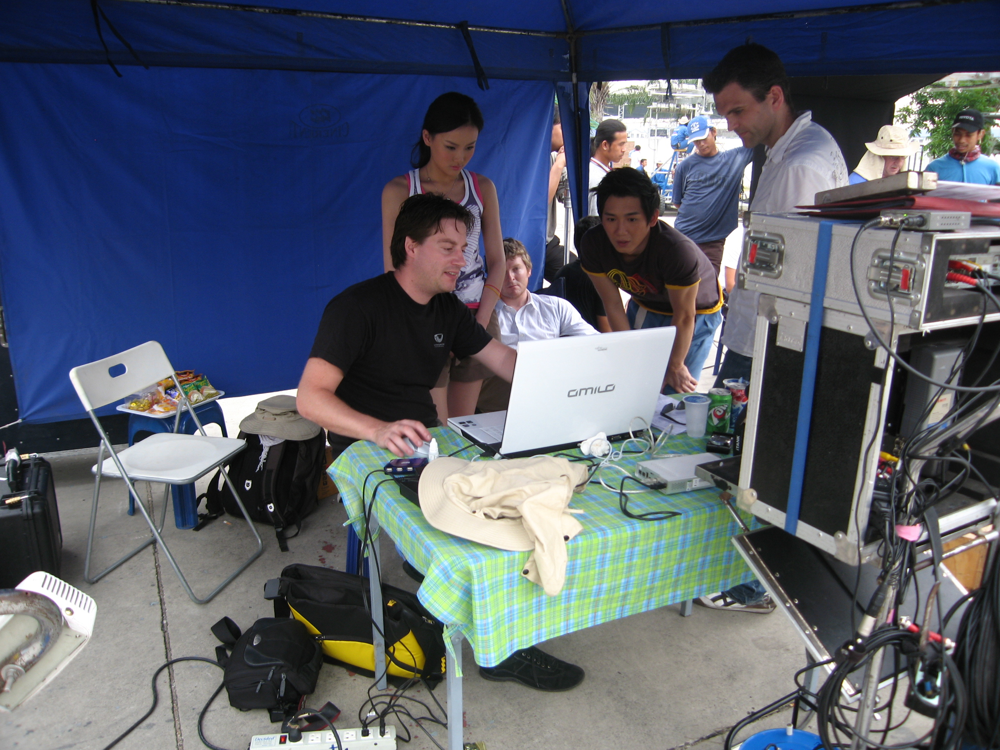

距离去台湾的日子越来越近，每个人都比我紧张，我本来是完全不紧张，现在开始有点紧张，紧张不是因为担心台北之行的结果，而是紧张每个人紧张的心情。本次去台湾除了要拍摄新专辑MV，另外就参加每个人都很紧张的超级星光大道踢馆赛，呵呵，我是一个没有好胜心的人，所以不知道结果会是怎样，反正各凭实力呗：）后天要参加一个什么年轻总裁协会上海分会，具体干嘛的我也不太清楚，我只直到我会以80后的代表之一，上台分享一些80后的思想，比如，怎么看待手机？怎么看未来，怎么看国家？。。。怎么看国家，我觉得这个问题太广泛了，作为80后的我一个女孩子，我不敢随便评论我们的国家，我挺喜欢中国的，其他的就让给80后的韩寒去说吧，不过他貌似已经被国家安全局给定上了，不过有智商的人应该都知道寒说的有道理。
很期待这次台湾之行，一个新的地方，也许又会认识很多新的人，新的挑战，结果如何？我想只要努力过就好，一切随缘吧，无论怎样，我们都会在经历中成长。。。
啊，又偏题了，我是放曼谷照片来的，本次美年达男主角应各种原因没来，是谁呢？算了，不让提。




